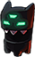
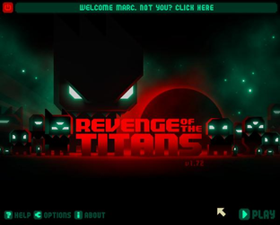
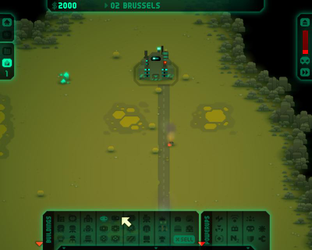
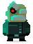

Revenge of the Titans
Dieser Artikel wurde für die folgenden Ubuntu-Versionen getestet:
Ubuntu 16.04 Xenial Xerus
Zum Verständnis dieses Artikels sind folgende Seiten hilfreich:

Revenge of the Titans  ist ein Echtzeit-Strategiespiel des preisgekrönten Independent-Studios Puppy Games. Im Spiel soll die Invasion der Erde durch die außerirdischen Titanen verhindert werden. Durch geschicktes positionieren der eigenen Streitkräfte, dem Erforschen und anschließenden Einsatz von neuen Technologien werden die außerirdischen Invasoren abgewehrt...
ist ein Echtzeit-Strategiespiel des preisgekrönten Independent-Studios Puppy Games. Im Spiel soll die Invasion der Erde durch die außerirdischen Titanen verhindert werden. Durch geschicktes positionieren der eigenen Streitkräfte, dem Erforschen und anschließenden Einsatz von neuen Technologien werden die außerirdischen Invasoren abgewehrt...
|  |  |
| Hauptmenü | Spielszene |
Installation¶
Humble Indie Bundle¶
Das Archiv aus der Aktion Humble Indie Bundle von der in der E-Mail angegebenen Adresse herunterladen und entpacken [1] z.B. nach ~/Spiele/revenge. Anschließend in das Installationsverzeichnis wechseln und das Spiel durch Eingabe von revenge.sh starten [2]. Auf Wunsch einen Menüeintrag [3] vornehmen.
Musik¶
Um in den Genuss der Musik zu kommen die Datei RevengeOfTheTitansSoundtrack.zip ebenfalls herunterladen und entpacken [4]. Den neuen Ordner Revenge of the Titans Soundtrack nach full_length_music umbenennen und nach /opt/revengeofthetitans/ verschieben [4] [5]:
sudo mv full_length_music /opt/revengeofthetitans/
Das Spiel ist unter "Anwendungen -> Spiele" zu finden. Nach dem ersten Start wird im Homeverzeichnis der Ordner .Revenge of the Titans VERSION angelegt.
Anleitung¶
Eine ausführliche Spielanleitung ist auf puppygames.net zu finden.
Update¶
Um eine aktuelle Version des Spiels zu erhalten lädt man sich das Demo herunter und installiert dieses.
Konfiguration¶
Über den Menüpunkt "Options" können u.a. Audioeinstellungen und die Auflösung geändert werden.
Demo¶
Eine Demoversion kann hier  hier heruntergeladen werden. Die Installation ist identisch wie die der Vollversion. Nach dem ersten Spielstart kann das Demo, durch Eingabe des auf der Herstellerseite erworbenen Codes, in eine Vollversion umgewandelt werden.
hier heruntergeladen werden. Die Installation ist identisch wie die der Vollversion. Nach dem ersten Spielstart kann das Demo, durch Eingabe des auf der Herstellerseite erworbenen Codes, in eine Vollversion umgewandelt werden.
Problemlösungen¶

Infobox¶
| Revenge of the Titans | |
| Originaltitel: | Revenge of the Titans |
| Genre: | Tower Defense / Strategie |
| Sprache: | |
| Veröffentlichung: | 2010 |
| Publisher: | Puppy Games |
| Systemvoraussetzungen: | Offizielle Systemvoraussetzung |
| Medien: | Download |
| Läuft mit: | nativ |

- Erstellt mit Inyoka
-
 2004 – 2017 ubuntuusers.de • Einige Rechte vorbehalten
2004 – 2017 ubuntuusers.de • Einige Rechte vorbehalten
Lizenz • Kontakt • Datenschutz • Impressum • Serverstatus -
Serverhousing gespendet von